Cast iron and stone
Two pieces built live through the modelling command API. A cast-iron spiral stair to a dealer's catalogue numbers (53" diameter, 8" rise, 12 treads a turn): one lathed column, one hand-made tread repeated by a live radial array, balusters on the same array, a handrail swept along the computed helix. A Gothic arcade from HABS drawings of the Church of the Ascension, New York: a pointed arch from two arcs, a clustered pier, a rib vault, bays on live linear arrays and a live mirror for the far side. Then a realism pass with the realism kit.

The film
node demos/stair/record.mjs (see direction.md).2:04 · 1920×1080 · 30 fps · H.264, faststart · rendered frame by frame on ANGLE (Apple, ANGLE Metal Renderer: Apple Paravirtual device, Unspecified Version)
Metrics
Realism pass: before and after
No geometry rebuilt (30-minute budget). Cast iron: the metal-dark preset (roughness 0.55) with a cast-surface relief at a 3 cm tile; the stair was painted off-white before. Arcade: limestone with a tooled relief at a 0.5 m tile (the kit has no stone pattern yet: grain stands in), the darker stone on bases, abaci, string course and ribs. Aisle floor: 0.9 m flagstone joints as groove strips - the floor is a plane, so cut: false lays the strips without the boolean.

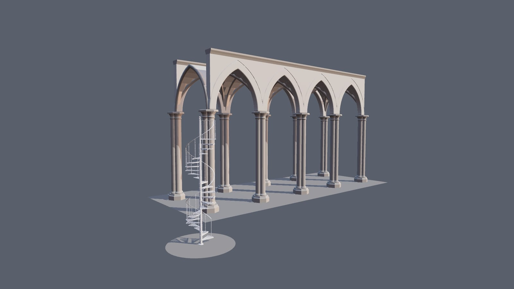

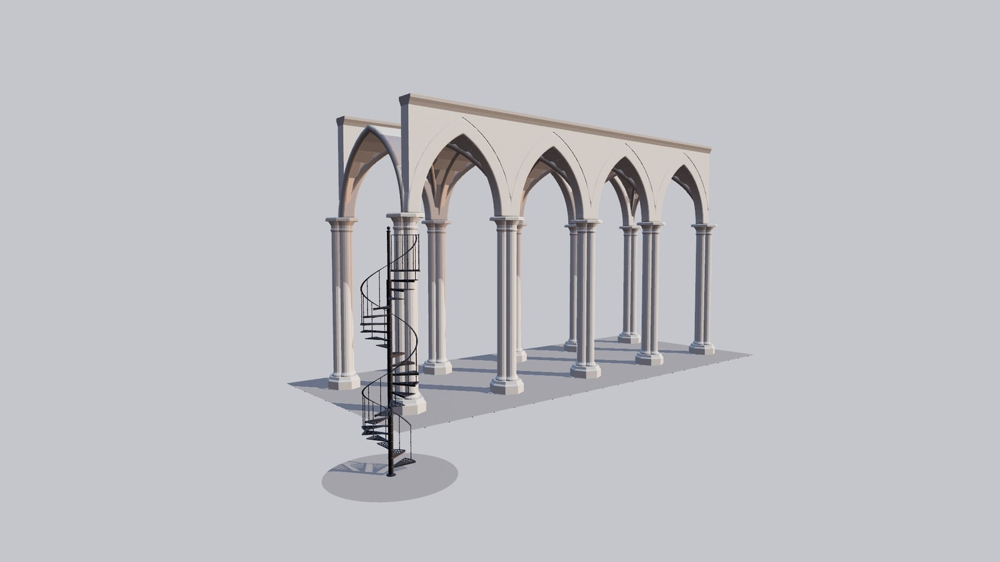
Key steps

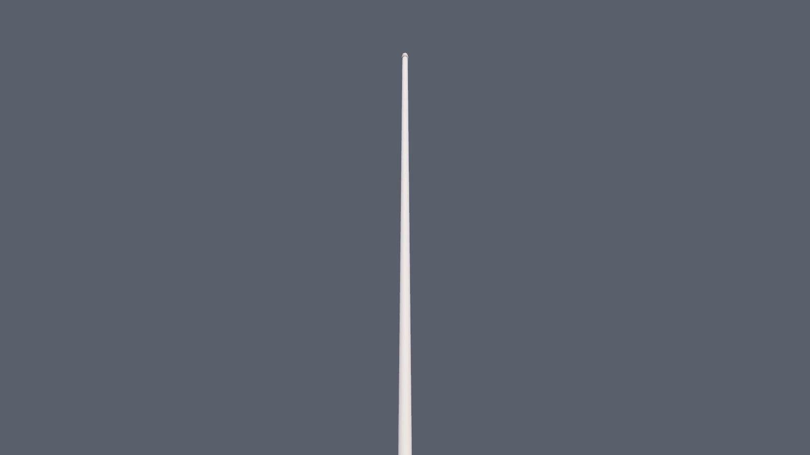

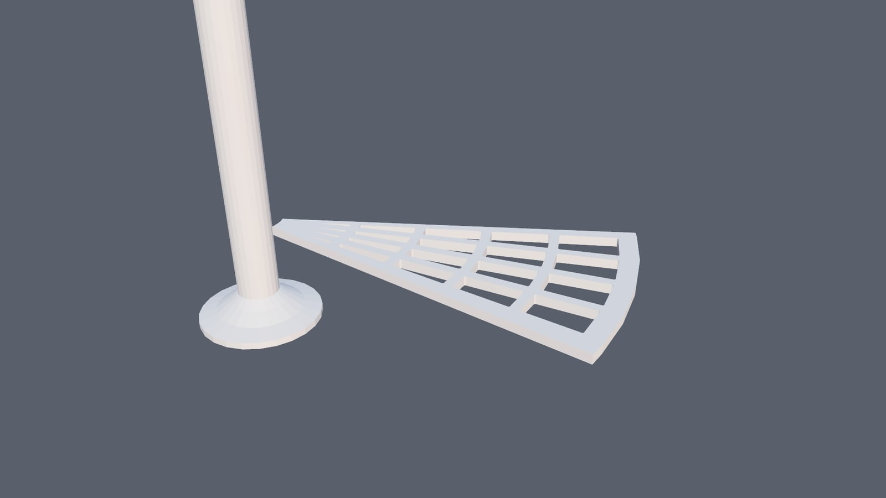

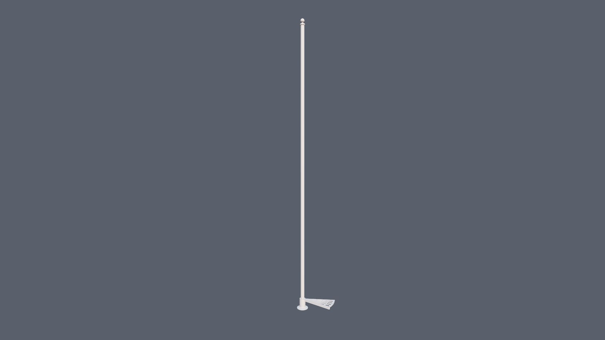

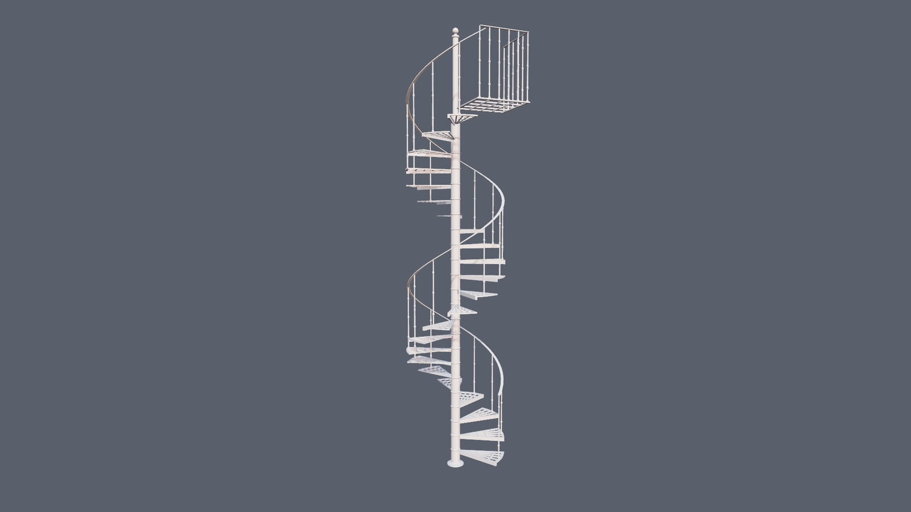

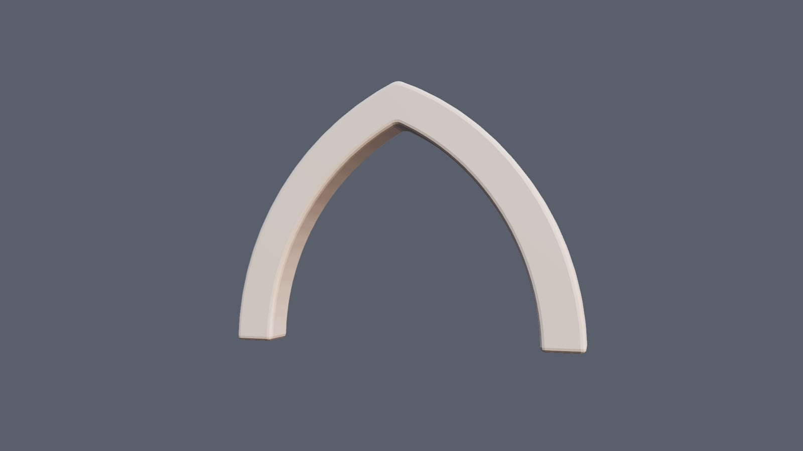

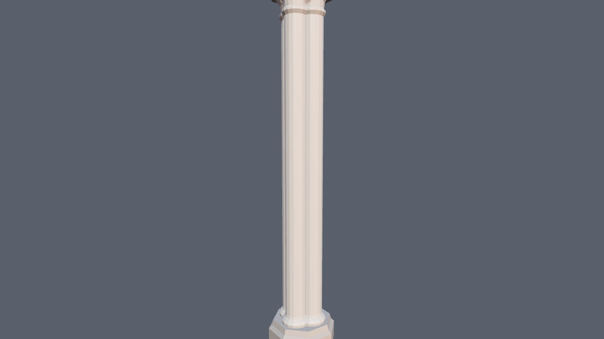

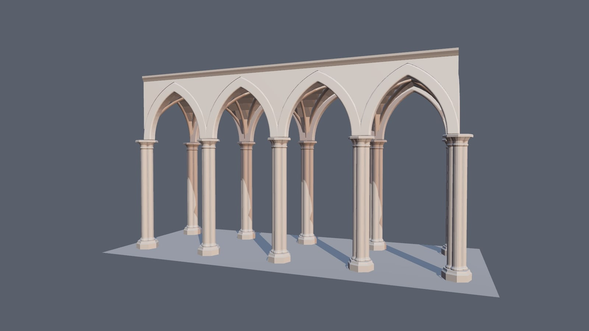

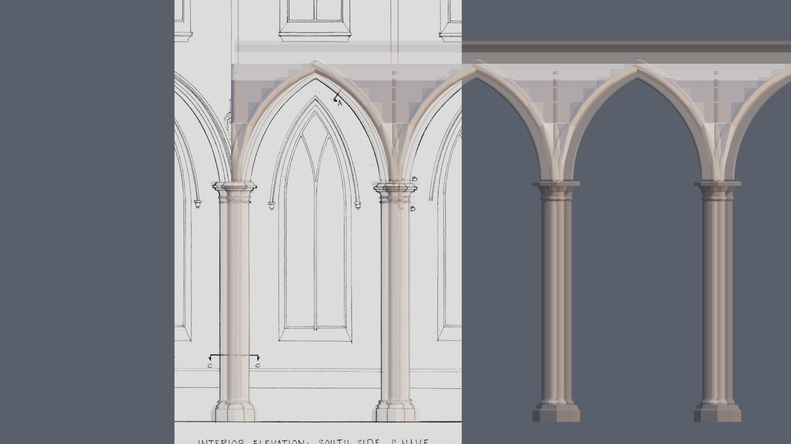

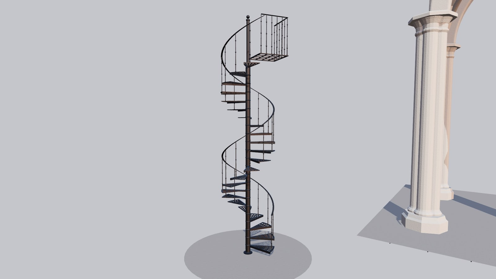

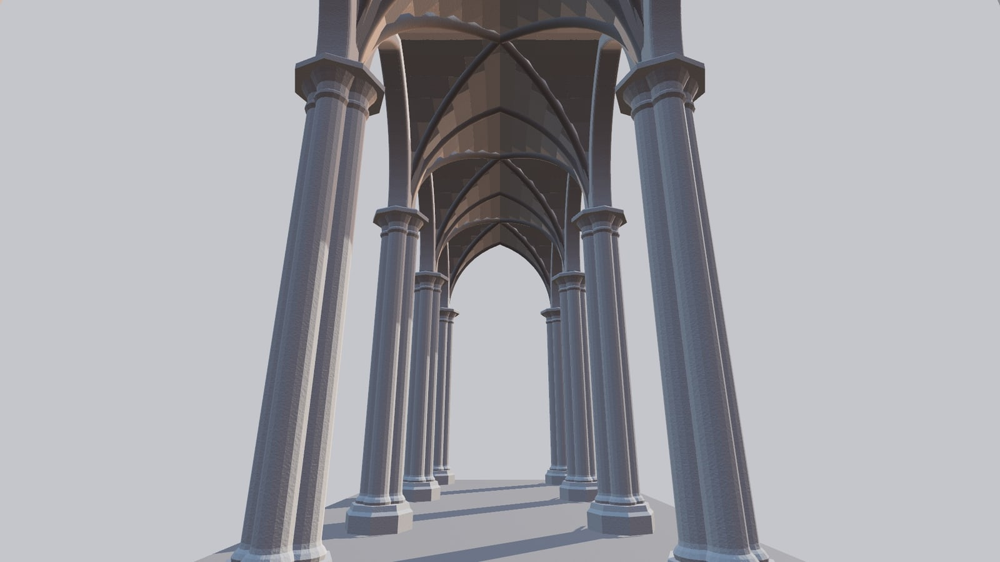

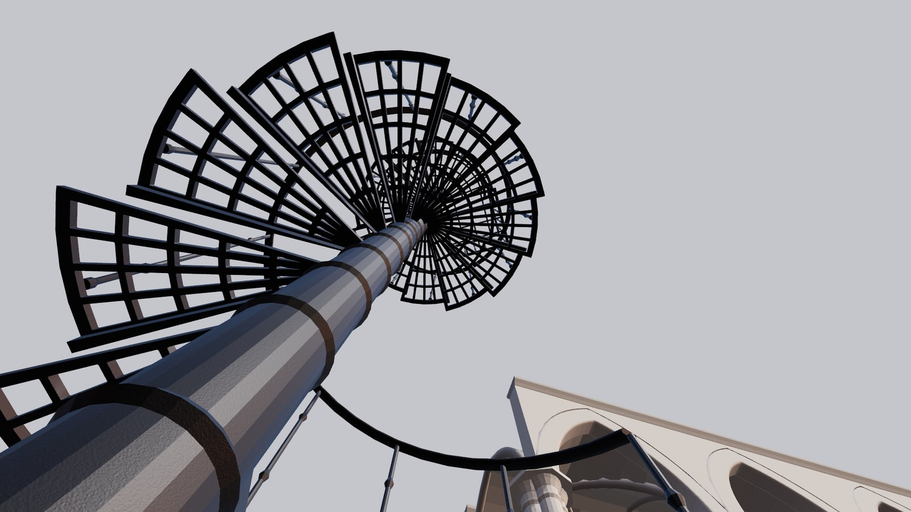

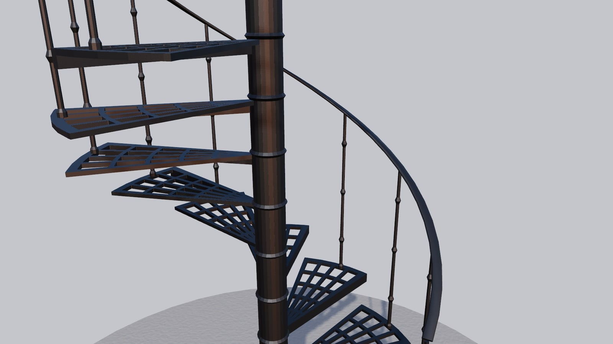
Checks
| check | reference | model | off | |
|---|---|---|---|---|
| stair diameter (outside of the treads), x | 1.3462 | 1.3462 | 0% | PASS |
| stair diameter (outside of the treads), z | 1.3462 | 1.3462 | 0% | PASS |
| floor to landing (top of the landing plate) | 4.8768 | 4.8768 | 0% | PASS |
| risers per full turn (tread copies + landing, / turns) | 12 | 12 | 0% | PASS |
| rise per step (catalogue 8" at 12 a turn) | 0.2032 | 0.2032 | 0% | PASS |
| handrail centre above the first tread (spindle + half the bar) | 0.8572 | 0.8572 | 0% | PASS |
| balcony spindle height above the landing | 0.8509 | 0.8509 | 0% | PASS |
| column above the landing (newel) | 0.9398 | 0.9398 | 0% | PASS |
| arch: floor to the intrados at the crown (as built) | 9.2751 | 9.2751 | 0% | PASS |
| arch: intrados span at the springing | 3.4412 | 3.4412 | 0% | PASS |
| pier: across the clustered shafts | 0.8169 | 0.8169 | 0% | PASS |
| pier: floor to the top of the capital (springing) | 6.5044 | 6.5044 | 0% | PASS |
| vault: floor to the crown (aisle ceiling, sheet 7) | 9.6774 | 9.6774 | 0% | PASS |
| arcade: pier centre to pier centre (from the arrayed piers) | 4.3434 | 4.3434 | 0% | PASS |
| arcade: aisle, pier centre to pier centre across (mirror) | 4.6025 | 4.6025 | 0% | PASS |
How it was made
build.mjs is the demo's session build script (catalogue and HABS readings, then the build, then measured checks). The realism pass is a block in its finale (session.realism, on by default). record.mjs runs it unchanged in examples/modelling-api on the GPU VM through demos/shared/session.mjs and demos/shared/film.mjs (every frame rendered and captured; camera jumps eased; captures held with their captions). The sun's shadow camera is sized by the film.
Re-run: node demos/stair/record.mjs then node demos/shared/report.mjs demos/stair. Only the public-domain HABS drawings appear on screen; the dealer's photographs of the stair (all rights reserved) were local modelling references and are not shown.
The film ran 222 commands (0 failed), 3580.2 ms of command time in the page on the GPU. By operation:
The first commands of the transcript (transcript.json has all of them, with results):
{"op":"delete","object":"*"}
{"op":"lighting","environmentIntensity":0.8,"background":"#5b6068"}
{"op":"light","name":"sun","type":"directional","position":[6,10,8],"target":[0,2,0],"intensity":2.4,"castShadow":true}
{"op":"lathe","name":"column","segments":24,"color":"#e6e3dc","profile":[[0,0],[0.1143,0],[0.1143,0.0127],[0.08128,0.02286],[0.05588,0.04064],[0.038099999999999995,0.05588],[0.038099999999999995,5.7861199999999995],[0.04
{"op":"primitive","type":"grid","name":"tread","xSegments":7,"ySegments":6,"width":1,"depth":1,"color":"#e6e3dc"}
{"op":"inspect","object":"tread","detail":true,"limit":100000}
{"op":"vertices","object":"tread","verts":[[0,0.06091660180387874,0.20319999999999996,0.002299831443318422],[1,0.081222135738505,0.20319999999999996,0.003066441924424562],[2,0.19493312577241198,0.20319999999999996,0.0073
{"op":"inspect","object":"tread","detail":true,"limit":100000}
{"op":"inset","object":"tread","faces":[8,9,10,11,12,15,16,17,18,19,22,23,24,25,26,29,30,31,32,33],"individual":true,"thickness":0.008128}
{"op":"deleteElements","object":"tread","faces":[8,9,10,11,12,15,16,17,18,19,22,23,24,25,26,29,30,31,32,33],"type":"FACE"}
{"op":"solidify","object":"tread","thickness":0.015875,"offset":-1}
{"op":"inspect","object":"tread","detail":true,"limit":100000}
{"op":"bevel","object":"tread","edges":[540,541,542,543,544,545,546,547,548,549,550,551,552,553,554,555,556,557,558,559,560,561,562,563,564,565,566,567,568,569,570,571,572,573,574,575,576,577,578,579,580,581,582,583,584,
{"op":"inspect","object":"tread","detail":true,"limit":100000}
{"op":"extrude","object":"tread","faces":[22,23,24,25,26,27,28],"distance":0.03175,"direction":[0,-1,0]}
{"op":"lathe","name":"collar","segments":24,"color":"#e6e3dc","profile":[[0.038099999999999995,0],[0.06095999999999999,0],[0.06857999999999999,0.01016],[0.06095999999999999,0.02032],[0.06095999999999999,0.203199999999999
{"op":"join","objects":["tread","collar"],"name":"tread"}
{"op":"array","object":"tread","count":1,"angle":0.5235987755982988,"axis":"y","step":[0,0.20319999999999996,0],"merge":false,"live":true}
{"op":"modifier","object":"tread","index":0,"update":{"count":2,"angle":1.0471975511965976}}
{"op":"modifier","object":"tread","index":0,"update":{"count":3,"angle":1.5707963267948966}}
{"op":"modifier","object":"tread","index":0,"update":{"count":4,"angle":2.0943951023931953}}
{"op":"modifier","object":"tread","index":0,"update":{"count":5,"angle":2.617993877991494}}
{"op":"modifier","object":"tread","index":0,"update":{"count":6,"angle":3.141592653589793}}
{"op":"modifier","object":"tread","index":0,"update":{"count":7,"angle":3.665191429188092}}
…
What still looks weak
- The stair's tread casting is a pierced grid, not the catalogue's ornamental pattern; balusters are plain lathes.
- The arcade has no wall behind it, no clerestory, no capitals' foliage: the mouldings are bevels, not profiles from a moulding library (R3 is not built yet).
- Stone relief is the plastic-grain pattern at a large tile; no ashlar coursing on the piers or spandrels.
- Cast iron reads as dark metal; a painted cast-iron preset (low metalness, semi-gloss) would be closer.
Credits
Historic American Buildings Survey, HABS NY,31-NEYO,95-, Church of the Ascension, Fifth Avenue and Tenth Street, New York (Columbia University for HABS, 1968), sheets 3, 7 and 8 via Wikimedia Commons - public domain.